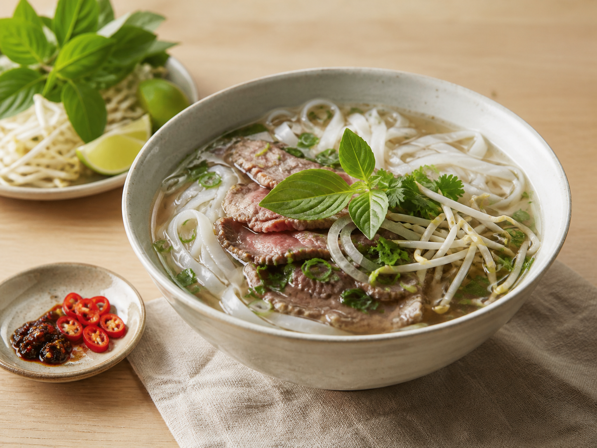

← All recipes
Vietnamese · Easy
Shortcut Beef Pho
A fragrant, clear noodle soup with tender beef and fresh herbs.

Let’s cook
Step by step
Char onion and ginger cut-side down in a dry pot for 4 minutes.
Add stock, cinnamon, and star anise. Simmer gently for 20 minutes.
Prepare noodles according to the packet and divide between deep bowls.
Add fish sauce to broth and taste. Remove whole spices.
Lay raw beef slices over noodles and pour boiling-hot broth directly on top.
Add bean sprouts and herbs. Serve immediately.
Read this firstIdiot-proof tip
Beef must be paper-thin so the boiling broth cooks it. Otherwise, simmer it in the broth first.